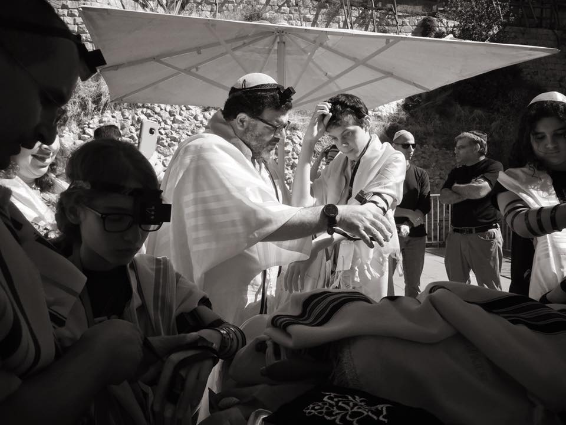
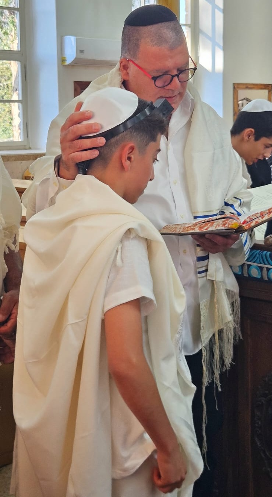
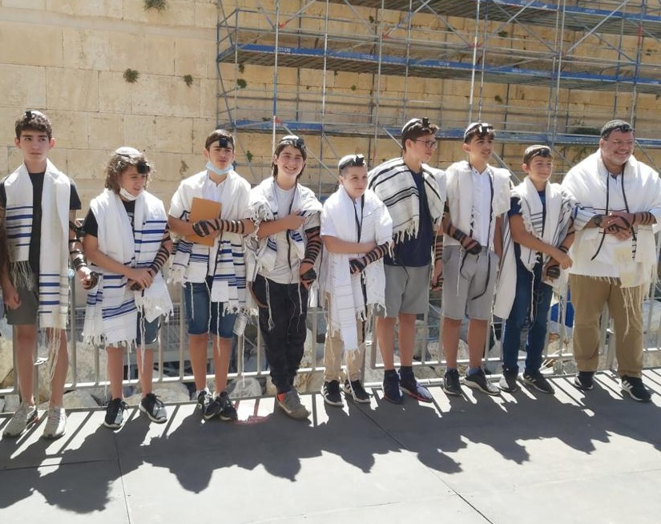
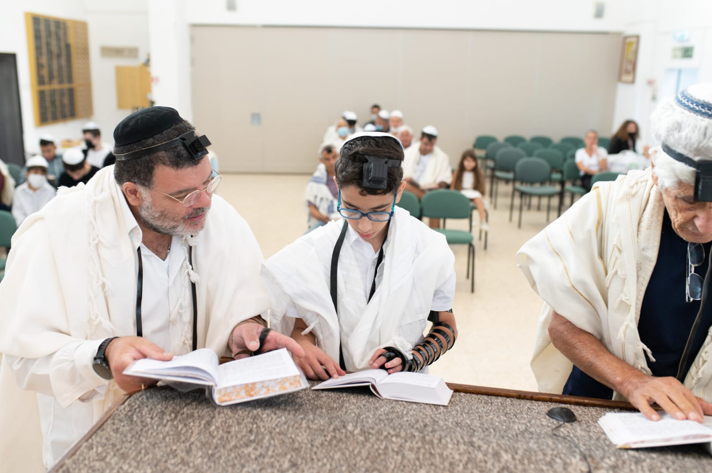
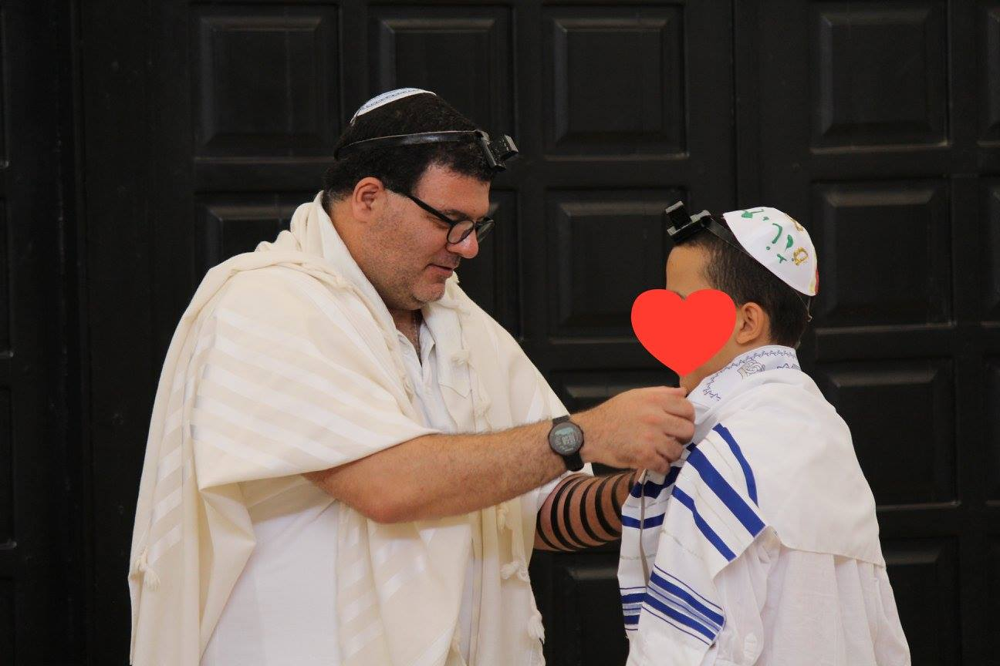

טקס נפלא שיזכרו אצלנו שנים רבות
תודה רבה על טקס בר המצווה הנפלא ועל תוכנית מעשירה ומעניינת שיזכרו אצלנו במשפחה עוד שנים רבות.
- משפחת קלמן

עם ישראל הוא עם הספר. לכן, בלב טקס ההתבגרות שלנו נמצאת הקריאה בתורה - לא כהופעה, אלא כהדגמה: הנער או הנערה מסוגלים לא רק לקרוא לעצמם, אלא גם לקרוא עבור אחרים.
הטקס המסורתי יפה כשלעצמו. אני לא כאן כדי להמציא אותו מחדש - אלא כדי לעזור לכם לקחת אותו למקום אישי, משפחתי ומשמעותי. עם ניסיון של מאות טקסים וליווי שמתחיל הרבה לפני היום עצמו.
בחרו את הדרך והטקס המתאימים לכם
ירושלים העתיקה, כל המשפחה יחד, והילד שלכם קורא בתורה.
ליווי והכנה אישית ומשפחתית - כדי שהרגע הזה יהיה שלכם באמת.
יש משהו מיוחד בלחגוג בין אנשים שמכירים אתכם.
ליווי והכנה לטקס בבית הכנסת או בקהילה שקרובים ללבכם - בהתאמה אישית למשפחה ולמקום.
כשהילדים עוברים את הדרך יחד - הטקס בסיום מרגיש אחרת.
מסע יהודי אישי וערכי בתוך קבוצה מתגבשת, שבסיום חוגגת יחד.
בואו נמצא יחד את המסלול המתאים לכם.
כל משפחה שונה, ואני מאמין אדוק ב"חנוך לנער על פי דרכו".
שלושה שלבים פשוטים
שיחת היכרות משפחתית עם הנער או הנערה. נבין מה חשוב לכם, ונבחר יחד מקום ותאריך שמתאימים לכם.
סדרת מפגשים אישיים קבועים שיביאו את הילד שלכם לטקס מוכן ובטוח.
הטקס המסורתי שלכם, עם השתתפות ונוכחות משפחתית אמיתית.
רעיונות לשנת בר/ת המצווה
צאו למסע משפחתי בין תחנות החיים שלכם — קחו מפת ישראל וסמנו עליה יחד נקודות משמעותיות למשפחה שלכם. בקרו בהן במהלך השנה.
לימוד משפחתי קצרצר בארוחה השבועית — בכל ארוחה שבועית, מישהו מהמשפחה מלמד מושג יהודי אחד - 5 דקות שמצטברות לעולם שלם.
שיחת שורשים עם הסבים והסבתות — שלחו את הילד לשוחח עם סבא וסבתא על ההיסטוריה והמסורת המשפחתית - איך הגענו לכאן, מהי היהדות שלנו, במה אנחנו מאמינים.
הוסיפו שיר לטקס — בחרו שיר שאתם אוהבים, הדפיסו את המילים, ושירו יחד עם כל המשתתפים.
השתתפו בתפילה אחת לחודש — קחו את הילד לקבלת שבת, לתפילת שחרית או סליחות - בבתי כנסת שונים. שיכיר את העולם הזה לפני שהוא עומד בתוכו.
כתבו ברכה אישית לילד — ברכה שתקראו בקול בטקס - מילים שלכם, לילד שלכם, ברגע שלו.





השאירו פרטים ואחזור אליכם בהקדם.